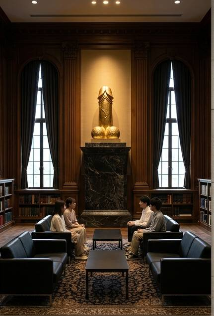

文学思想交流室
LITERATURE & PHILOSOPHY COMMON ROOM
文学思想交流室とは
文学思想交流室は、文学・思想・哲学・文化などについて、 学生や教員が自由に議論するために設けられた施設です。
特定の結論を出すことだけを目的とせず、 「考えることそのもの」を大切にしています。
主な活動
「人間はなぜ物語を必要とするのか」
「自由意志は本当に存在するのか」
「文学は現実を変えられるのか」
「そもそも現実とは何なのか」
「大学で学ぶ意味とは何なのか」
これらの問いを中心に、読書会、研究会、 公開討論などを行っています。
利用について
文学部の学生だけでなく、 他学部の学生も自由に利用することができます。
ただし、議論が長時間に及ぶことがあります。
特に「人間とは何か」というテーマについては、 閉館時間までに結論が出ないことが多いため、 利用者は各自の責任において帰宅してください。
文学思想交流室からのメッセージ
答えのない問いを恐れる必要はありません。
むしろ、答えがないからこそ、 私たちは考え続けることができます。
そして、考え続けた結果、 さらに新しい問いが生まれるかもしれません。